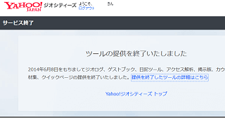

ホームページ付属のジオログも作成
ホームページはあまり頻繁に更新するものではなく、コンテンツは固定させておくのが一般的ですが、最新情報を掲載して定期的に更新しないと検索エンジン対策への悪影響が出てきます。
けれども、ホームページ形式で作成している場合、自動的に内部リンクは構築されないため、更新作業は次第に苦しくなっていきます。そのような場合、ホームページに何らかのブログツールを設置しておくと便利です。
当サイトが利用しているジオシティーズには、ジオログというブログツールが付属しているようなので、当ホームページにも設置してみました。先ほど作成してみたジオログはこちらのジオログですが、今後の更新作業はそちらを使う予定でおります。
http://geocities.yahoo.co.jp/gl/freehomepageblog
シンプルな更新ツールとなっており、ブログツールというよりも日記ツールなのかもしれません。
【追記：】ジオログは2014年6月8日をもって終了しました。

ジオログとジオシティーズのドメイン的な関係
このジオログについてですが、ドメイン的には「無料ホームページ」と「ジオログ」ではドメインが違うため、相互リンクの形をとると外部サイトからの被リンク扱いになるかと思います。
geocities.yahoo.co.jp/gl：ジオログ
www.geocities.jp：無料ホームページ
このジオログのドメインは、ヤフー本体（yahoo.co.jp）に加えられた（geocities）というサブドメインのふたつ下の階層になります。そのため、一応はyahooからのリンクという形になるのかもしれません。
一方、無料ホームページのジオシティーズは（geocities.jp）という独自ドメインのひとつ下の階層にあたるため、ヤフーのサービスではあるもののドメイン的にはヤフーではないです。
ジオログで作成したサイトはドメイン的には違うサイトとみなされるので、被リンク対策に有効と考えております。
更新頻度についても、ポータルのトップページでは１分間に10記事ぐらいは更新されており、多くの利用者がいるものと思われます。ジオシティーズを作成した際には、ついでに取り入れてみるのもよいかと思います。
ホームページにブログを設置する際の３パターン
スタッフブログや社長ブログのように、会社ホームページの下に最新情報などを更新するためのブログが設置されているケースも多いです。一度作成してしまうとほとんど更新しないホームページの場合でも、何らかのブログを設置して定期的に更新しておくことをおすすめします。
その際には以下の３パターンの作り方が一般的です。
①ホームページに「blog」フォルダを作成し、ディレクトリ下に設置
→ www.example.com/blog/
②「サブドメイン」を設置し、外部サイトとして作成
→ blog.example.com
③無料ブログサービスを利用する
→ アメーバブログなど
①の場合、ディレクトリ下で更新するたび、ホームページのドメイン本体でのページボリュームが増えていくため、SEO対策に役立つというメリットがあります。ただし、同一ドメイン内のため、外部サイトからの被リンク獲得のようなSEO効果は見込めません。
一方、②の場合、サブドメインは独立したサイトとして扱われますので、外部からのリンクを獲得する意味でSEO対策上のメリットがあります。また、①と比較するとブログ自体も検索でヒットしやすくなります。
③のように、外部の無料ブログサービスを利用するのもよいかとは思いますが、途中でサービス終了となるケースも多いため、長期的に運営するのでしたら自分の管理下にあるドメインに設置する方が安心です。
もし、よく更新することを予定していてページボリュームが多くなるブログの場合は、②のようにサブドメインを設置して独立したサイトとして作成する方がよいでしょう。
一方、たまに最新情報を更新する程度でしたら、サブドメインで設置しても放置ブログ化してしまうはずなので、①のようにフォルダ分けをしてそのままディレクトリ下に設置してしまう方がよいです。
いずれの方法をとるにしても、CMSなどを利用してテンプレートをカスタマイズし、本サイトと似たデザインで違和感が出ないようにすることをおすすめします。